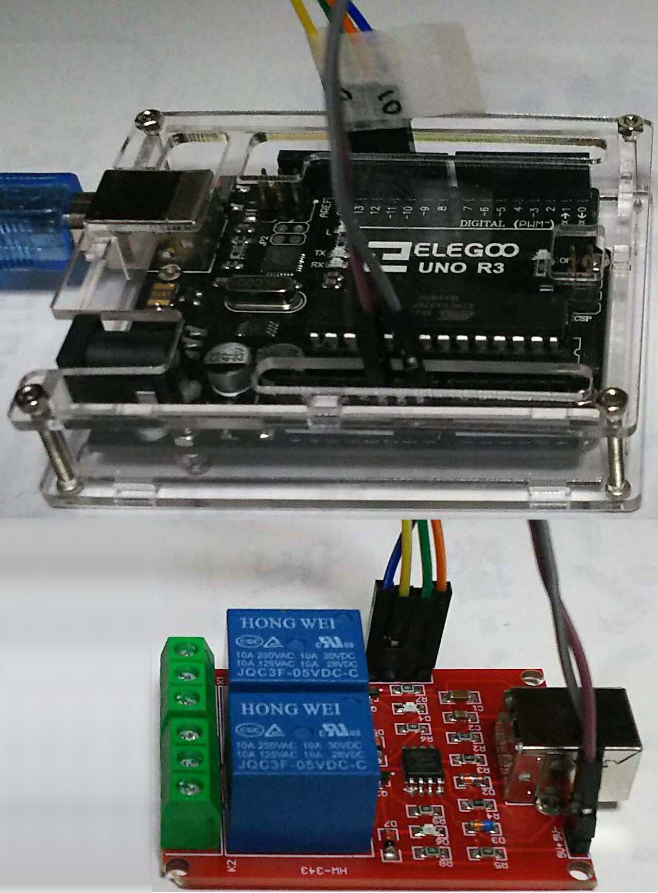

USBリレーのAVR書き換え
USBリレーのAVRの中を書き換える。
事の発端は、CQマシン用のUSBリレーの予備として同じものを購入したが、
それがWindows10で認識されなく、中のプログラムのせいではと思ったからである。
今回は、基板に、USB-Relay-2、USB-Relay-1とシルク印刷されているタイプで試行した。
aruduino UNOをISPとして使用、スケッチはArduinoISPを書き込み
6ピンをUSBリレーの端子に接続
(arduino)Vcc,GND,13,12,11,10 == (USBRelaiのATtiny45)5V,GND,SCK,MISO,MOSI,RST
(リレーの基板に書き込み用に端子が付いている)
avrdude.exeをavrdude-GUI.exeでGUIで操作
avrdude.exe File指定
Programmer:Arduino(aruduino)
Port:COM6(********)
Device:ATtiny45(45)
Command line Option:-b 19200
Readボタンを押す。
読み出したのは、Flash.hex、eeprom.eep、Fuse、Lock Bit
認識できない方と正常なのとの違いはFuseであったので
Fuseを正常なものに書きかえたら、認識された。
ATtiny45の規定値と同じだったので、Fuse書き込みがされていなかったようだ。
USB-Relay-2は書き換えできた。
うまくいったのでUSB-Relay-1の方を試してみる。(基板の色が緑色)
こちらにはピンが付いていないので付ける。
ロックビットで制限がかかっていて、読み出せなかった。(値：FC 下位ビット00)
別のリレーのシリアル番号の違うもの(基板の色が赤)を試してみると読み書きできた。(値：FF 下位ビット11)
ロックビットで制限がかかっているUSBリレーを読み書き可能にするには
12Vの高電圧を掛けてプログラミングしなくてはいけないようだ。
それには基板からAVRチップをはずさないといけない。
そして、フラッシュデータは取り出せない。
USBリレーのシリアル番号の書き換え (USB HIDのシリアル番号ではない、シリアル番号は無い)
何回か大陸から通販でUSBリレーを購入したが、リレーのシリアル番号が同じものが届く。
これで複数個PCにつないでも1個しか認識されない。
そのためシリアル番号を変更したかった。
シリアル番号はeepromに見つけることができた。
eepromの内容
例：1行目
:20000000485552544D00FFFFFFFFFFFFFFFFFFFFFFFFFFFFFFFFFFFFFFFFFFFFFFFFFFFF6A
00485552544D00 先頭と最後尾00で囲まれた485552544がシリアル番号 「HURTM」 $48は「H」
これを「HURTM」から「PPPPP」にバイナリーエディタで書きかえる。
この文字列ならチェックサムは同じでいける。
(ASC文字)485552544D = (バイナリー) 34 38 35 35 35 32 35 34 34 44
------→35 30 35 30 35 30 35 30 35 30
3ヵ所あるので書きかえる
avrdude-GUI.exeでGUIで操作
EEOROMに編集後のeeprom.eepを指定し、
EEOROMのWriteボタンを押す。
出来たUSBリレーをPCで認識しシリアル番号が変わっていて操作もできた。
後日USBaspを入手したのでやってみる。
avrdude-GUI.exeでGUIで操作
Portに空白、COM*、LPT1、USBにしても読み出せた。
Command line Optionも空白でも読み出せた。
